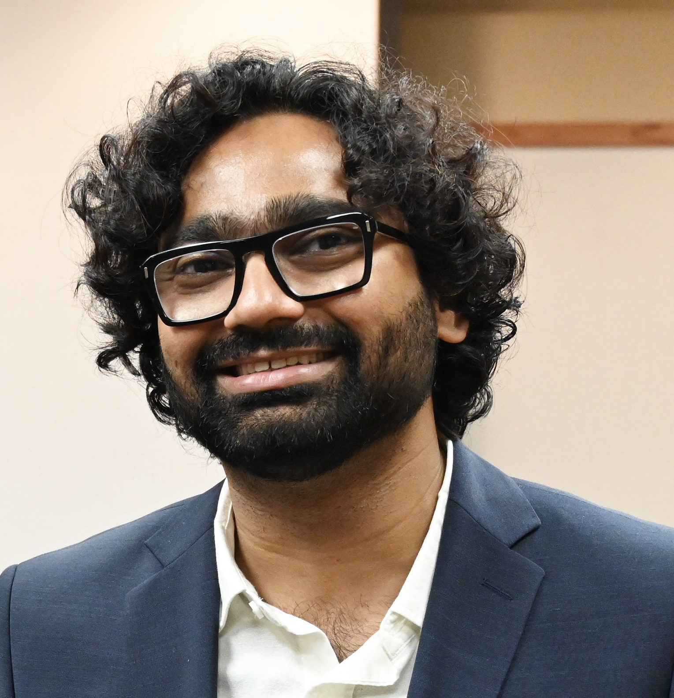

Anupam Anand Ojha is a Flatiron Research Fellow at the Center for Computational Biology and the Center for Computational Mathematics at the Flatiron Institute. He specializes in theoretical and computational biophysics, focusing on developing multiscale simulations at the intersection of cryo-electron microscopy, machine learning, and biomolecular modeling. His work aims to study protein-ligand and protein-protein interactions, model kinetic pathways involved in molecular recognition and signal transduction, and enhance understanding of complex biomolecular systems for accelerated drug discovery.
Dr. Ojha earned his Ph.D. in Chemistry with a specialization in Theoretical and Computational Biophysics from the University of California, San Diego, under the mentorship of Prof. Rommie E. Amaro and Prof. J. Andrew McCammon. During his doctoral research, he developed multiscale computational methods integrating Brownian dynamics, enhanced molecular dynamics, quantum mechanics, and machine learning approaches to advance drug discovery and deepen biomolecular understanding. He has made significant contributions to computational biophysics, including developing advanced algorithms and software packages such as SEEKR, QMrebind, GaMD-WE, DeepWEST, cryoWEight, ManifoldEM, seekrflow, and PySTARC.
His research achievements are complemented by a robust publication record featuring several first-author papers in prestigious journals and invitations to present at numerous international conferences. Dr. Ojha's excellence has been recognized through awards including the Swiss Government Excellence Scholarship, Molecular Sciences Software Institute SEED Fellowship, Distinguished Graduate Student Fellowship, Merkin Graduate Fellowship, Merck Research Award for Underrepresented Chemists of Color, and the Flatiron Research Fellowship, among others.